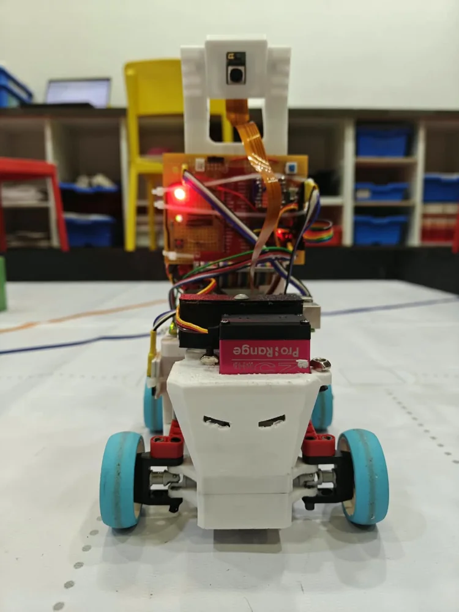
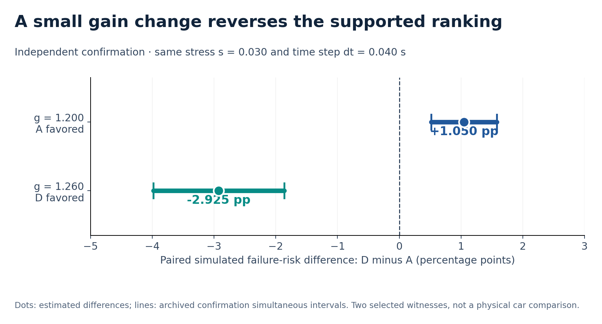
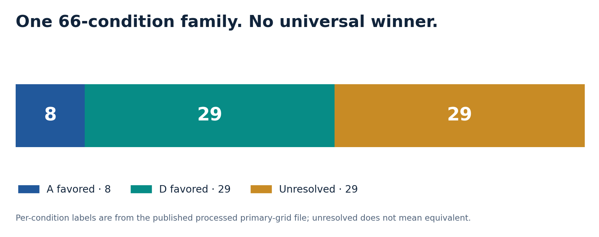
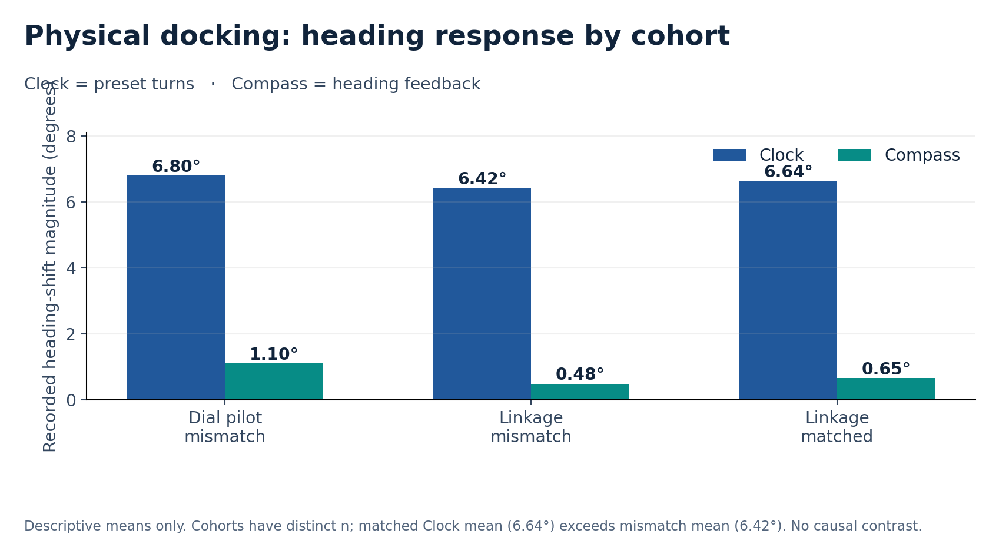
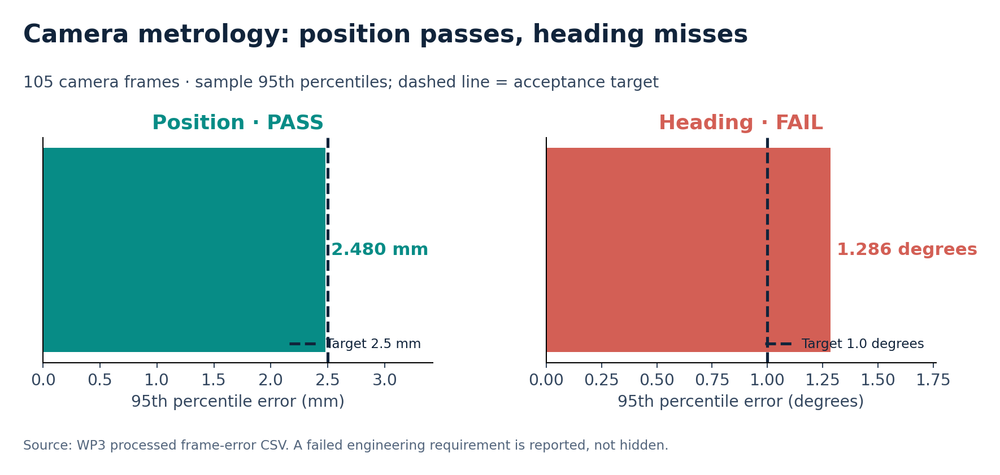
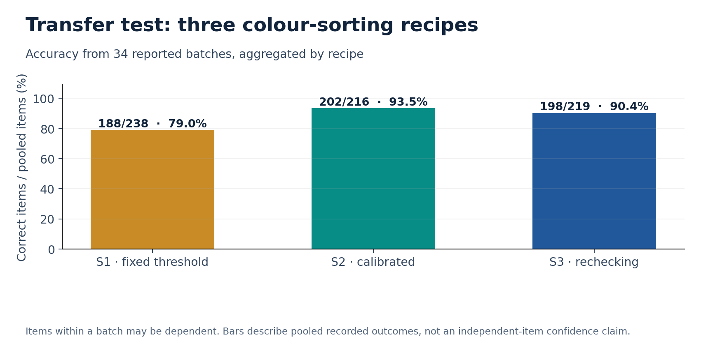
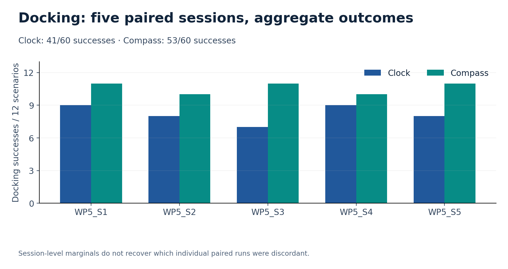

Emergency stop
10/10 initial checks; 23/24 confirmed overall, including one later failure.
When the simulator changes its mind.
Small shifts in steering assumptions can reverse which robot architecture appears better. We tested that problem with a physical autonomous car, paired simulation contrasts and an evidence-aware decision workflow.

A and D are two seven-feature architectures in a source-informed simulator. Their paired failure-risk difference changes sign when the specified steering-gain parameter changes. The independent confirmation results support both sides.

Independent confirmation bank · s = 0.030, dt = 0.040 s · positive delta = lower failure risk for A, negative = lower risk for D. These results do not represent two measured physical cars.

The certificate only covers a finite declared simulation family and its sampling uncertainty. It does not establish a universal real-world outcome or validate an entire autonomous vehicle as safe. An unresolved result is not evidence of equivalence.
Physical steering calibration and docking studies separately investigate hardware sensitivity.
The study separates physical experiments from simulation, and separates both from decision-cost benchmarking. No neat-looking total should quietly merge different populations.
10/10 initial checks; 23/24 confirmed overall, including one later failure.
Measured OLS slope ≈ 1.238. Latency p95 ≈ 28.16 ms; 3/200 misses at 33 ms.
Position p95 2.480 mm passes its goal; heading p95 1.286° fails.
In linkage mismatch: 6.42° vs 0.48° mean heading-shift magnitudes. Descriptive only.
41/60 vs 53/60 docking successes; decisions agree with 8/10 held-out references.
Reversible intervention tracks mechanical response and current across three phases.
Three recipes S1, S2 and S3; pooled correct 588/673 items in 34 batches.
160 both-fail outcomes among 204 failure-bearing extended pairs, or 78.4%.
66 primary cells, eight independent confirmations and 12 new model-form conditions.

Physical heading means are not a clean causal mismatch-versus-matched contrast.

The metrology miss and the later emergency-stop failure are disclosed rather than removed.

Batch-level aggregation does not justify treating all items as independent draws.

Session totals cannot reconstruct the missing matched-pair WP5 outcome identities.
Reproducibility includes stating what cannot be reproduced. These are the current evidence boundaries, not decorative footnotes.
The publicly shared CSVs and retrospective Python replay tools verify internal arithmetic; they do not regenerate the missing 752,000 original simulator runs or authenticate sealed instrument footage. The original simulation generator and historical hardware acquisition sources are not in this public package.
The manuscript reports a 14.3–33.0% decision-cost reduction, but the benchmark's original policy definitions and action labels were not reconciled. It is not independently validated here. Five archived confirmation interval endpoints also differ from a fresh explicitly allocated conservative calculation. The processed CSVs have not been altered.
The paper, two primary numerical CSVs and six charts are directly accessible from this standalone page. The full GitHub repository also contains all processed tables, tests, reconstruction scripts and historical robot source.